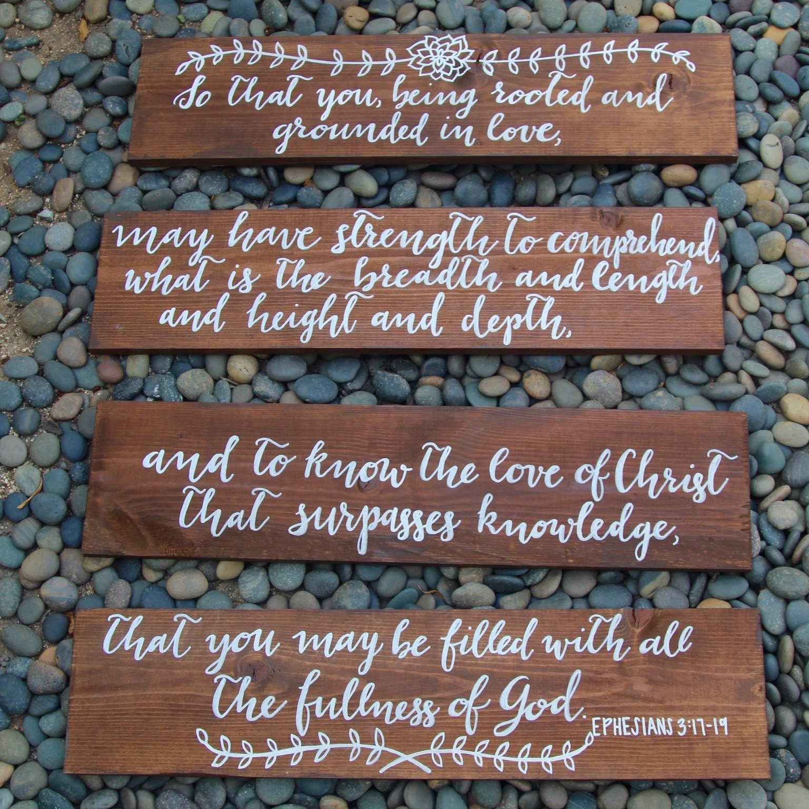
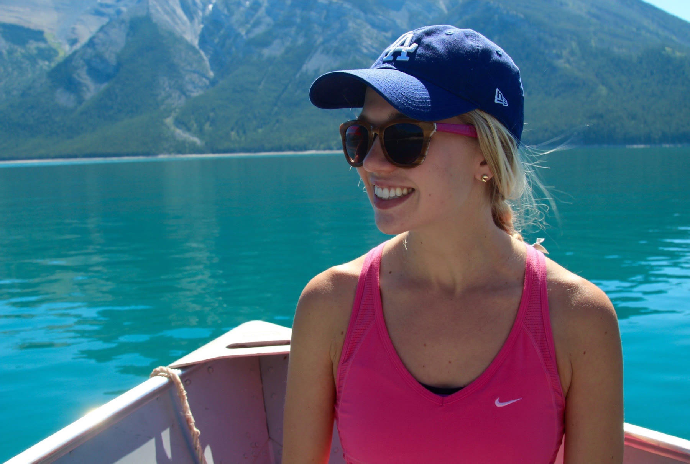
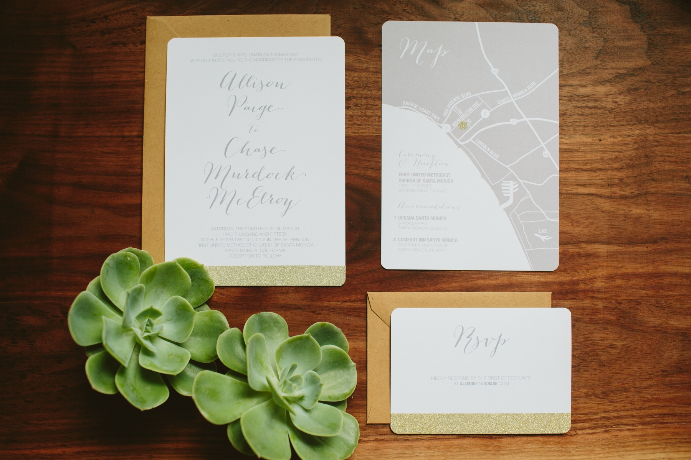

Notes
Musings

01
If there's one thing I love more than surprises, it's helping a good friend with a surprise proposal!

02
Just a glimpse at our amazing friendcation to Banff, Canada. Thanks to our favorite Canadian couple for tying the knot and giving us Californians an excuse to visit your amazing home.

03
Shoutout to our amazing photographers at Hom Photography and my now husband Chase for his invitation production skills. Thank you all for making my wedding dreams come true.